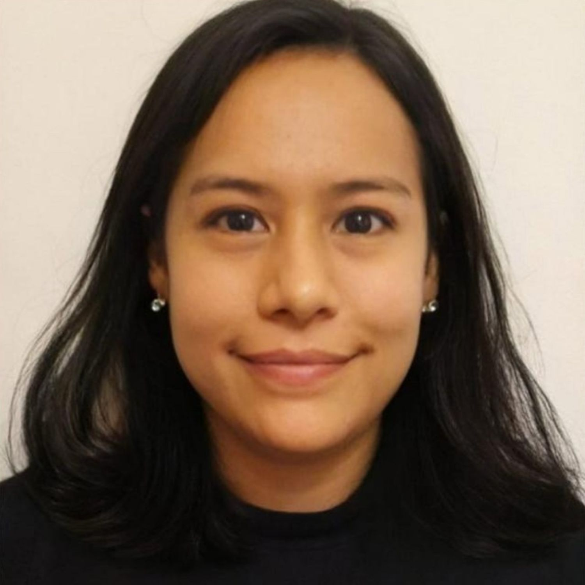

Sono una professionista di Business Intelligence specializzato nella trasformazione dei dati in informazioni utili per supportare le decisioni aziendali. Mi occupo di analisi, integrazione e visualizzazione dei dati, creando dashboard, report e KPI per monitorare le performance e individuare trend, anomalie e opportunità. Utilizzo strumenti come Power BI, Excel, Power Query, SQL, Python, DAX, Tableau e Microsoft Fabric, oltre a piattaforme cloud e data warehouse. Mi occupo anche di processi ETL/ELT, automazione del reporting e analisi predittiva. Integro inoltre strumenti di intelligenza artificiale per rendere l’analisi più rapida ed efficace e trasformare grandi quantità di dati in insight concreti. Sono una persona analitica, orientata ai risultati e attenta ai dettagli, con la capacità di trasformare dati complessi in informazioni chiare e facilmente comprensibili. Il mio obiettivo è trasformare i dati in decisioni, contribuendo a migliorare l’efficienza e le performance dell’azienda.
Bachelor of Engineering in Computer System
Ingegneria di software · Information Technology
2007 – 2013 · UBA · Completato
Higher Degree in Informatic Science
Web · Front End · Full Stack
2003 – 2007 · UBA · Completato
Orientamento all'apprendimento continuo, passione per la tecnologia, capacità di analisi e problem solving, autonomia nello sviluppo di soluzioni, attenzione alla qualità, mentalità orientata all'innovazione, automazione ed efficienza dei processi.
Forte interesse per la progettazione di soluzioni Digitale, con particolare attenzione all'automazione delle attività ripetitive, all'efficienza, alla qualità del software e al miglioramento continuo. Disponibile a lavorare con tecnologie differenti in funzione delle esigenze del progetto.
Spagnolo – Madrelingua
Italiano – B2
Inglese – B1
Professionista basato a Pontevedra, Spagna, disponibile per attività Business Inteligent, consulenza tecnologica, Quality Assurance e automazione digitale.
